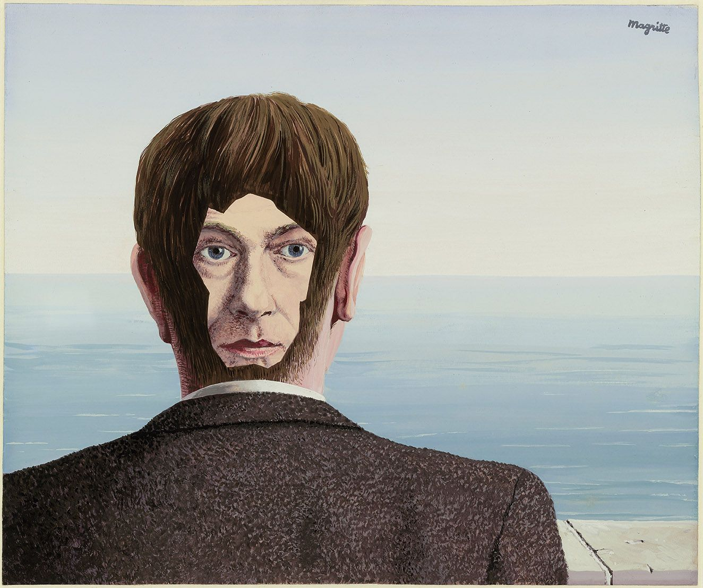
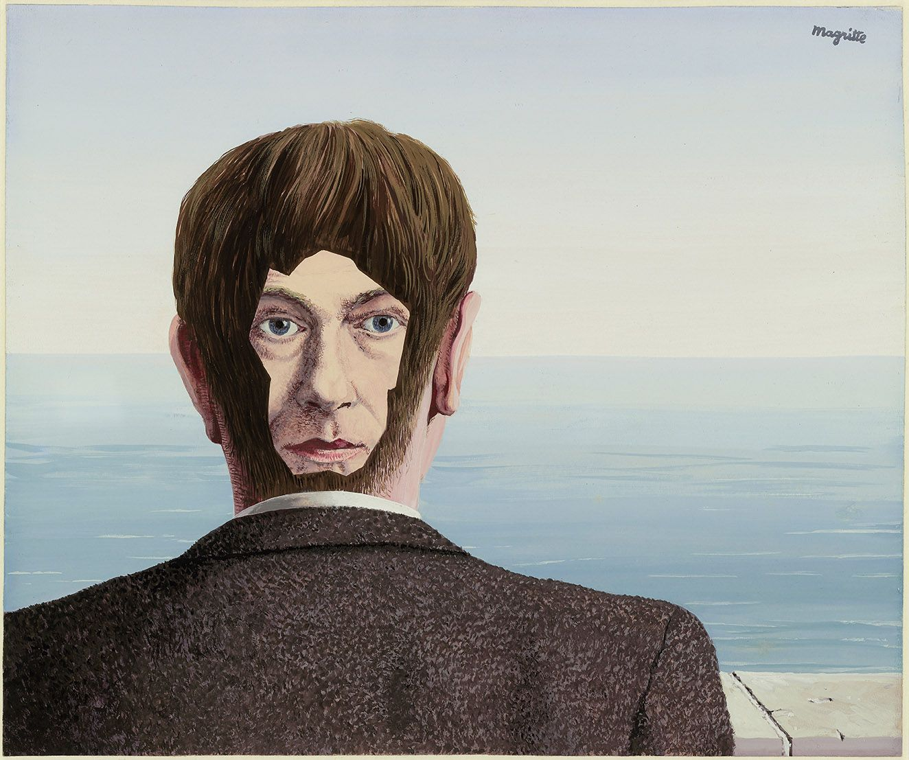

René Magritte
René Magritte, il celebre artista surrealista belga nato nel 1898, è noto per le sue immagini enigmatiche e i suoi concetti provocatori che sfidano il concetto di realtà. Magritte è famoso per dipingere oggetti comuni in modi inusuali, spesso combinando elementi familiari in modi sorprendenti per creare un senso di mistero e meraviglia. La sua opera più iconica, "Il tradimento delle immagini", ritrae una pipa con la frase "Ceci n'est pas une pipe" ("Questo non è una pipa") sotto di essa, invitando gli spettatori a riflettere sulla distinzione tra oggetto e rappresentazione. Magritte ha dimostrato un'incredibile abilità nel manipolare la realtà attraverso la pittura, esplorando temi di identità, percezione e significato. La sua arte ha influenzato generazioni di artisti e continua a suscitare domande e discussioni sulla natura stessa dell'arte e della realtà. Altre opere celebri di Magritte includono "Il figlio dell'uomo", "La condizione umana" e "La trahison des images".


 
Home

Home